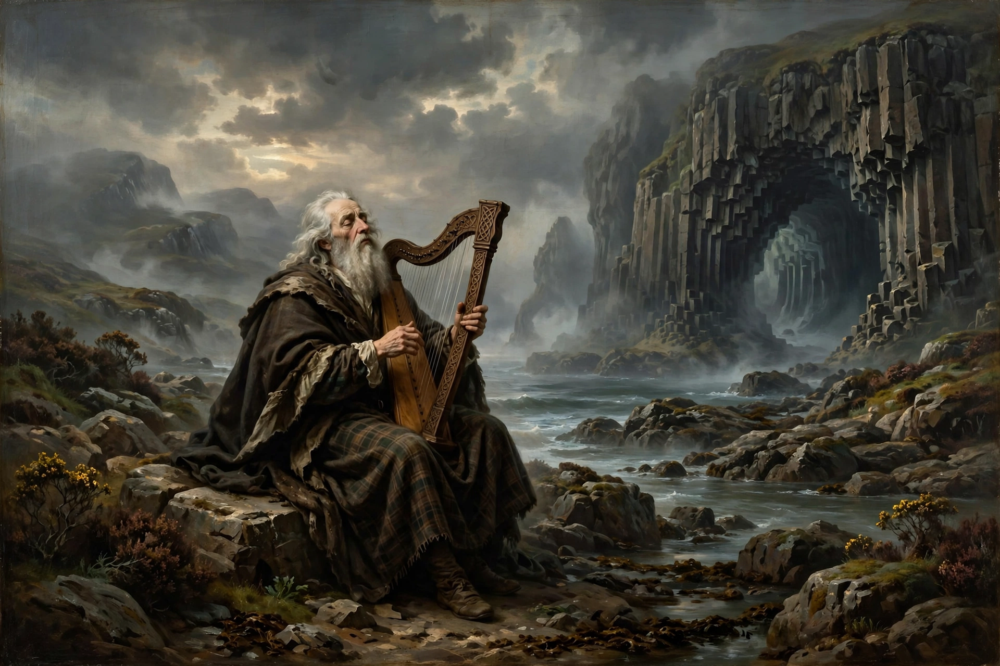

Ossian is the purported author of a cycle of epic poems published by James Macpherson in the 1760s, claimed as translations from ancient Scottish Gaelic oral tradition attributed to Oisín, son of Fionn mac Cumhaill.
Macpherson's works became an international sensation, influencing Goethe, Napoleon, and Romantic nationalism. Samuel Johnson and others demanded manuscripts Macpherson never convincingly produced. Modern scholarship holds the poems are largely Macpherson's own creations woven from genuine ballad fragments and Irish Fenian material.
Despite doubts, Ossian shaped European Romanticism, Celtic revivalism, music (Mendelssohn's Fingal's Cave), and place-names worldwide.